System Specifications
Specifications
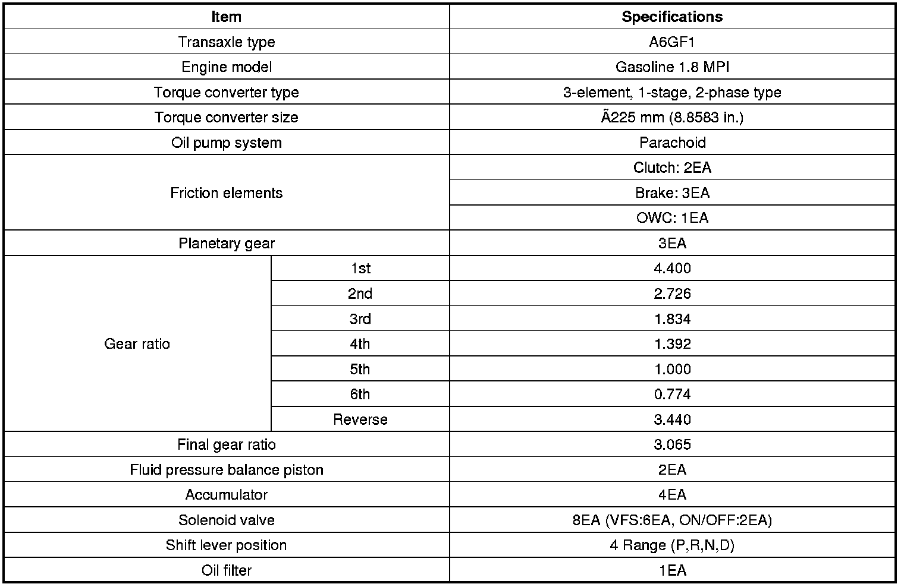
VFS: Variable Force Solenoid
Sensors
Input Speed Sensor
- Type: Hall effect sensor
- Specifications
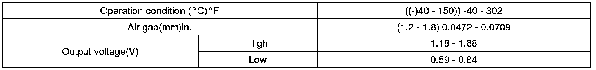
Output Speed Sensor
- Type: Hall effect sensor
- Specifications
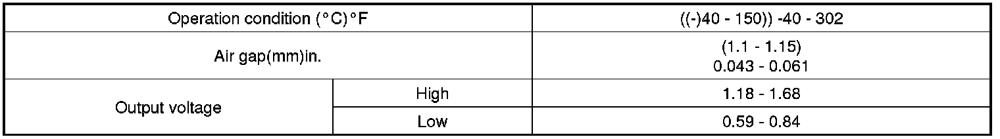
Oil Temperature Sensor
- Type: Negative thermal coefficient type
- Specifications
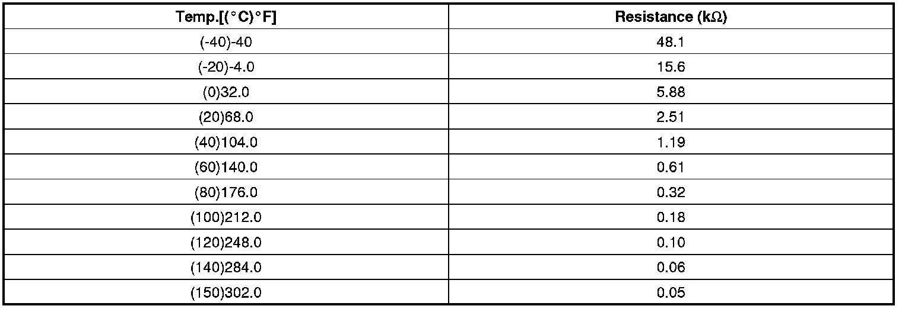
Inhibitor Switch
- Type: Combination of output signals from 4 terminals
- Specifications
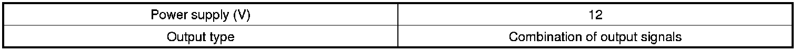
Solenoid Valves
Direct control VFS[26/B, T/CON]
- Control type : Normal low type
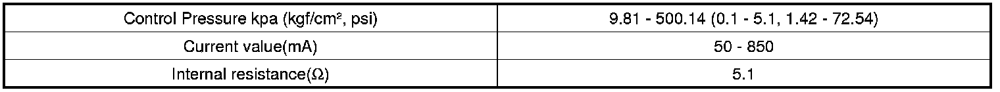
Direct control VFS[UD/B, OD/C, 35R/C]
- Control Type : Normal high type

Line Pressure Control VFS
- Control type : Normal high type
ON/OFF Solenoid Valve(SS-A, SS-B)
- Control type : Normal low type
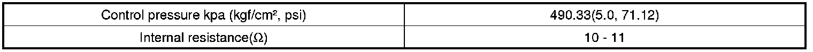
Solenoid Valve Operation Table
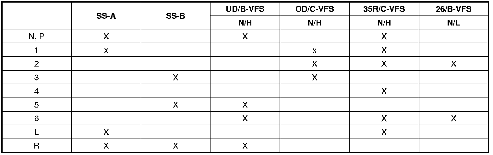
X : Connected status
x : Connected at vehicle speed above 8km/h
Tightening Torques
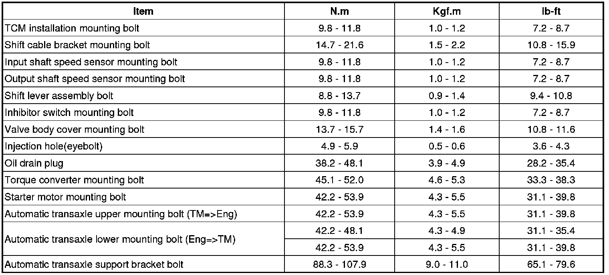
Lubricants
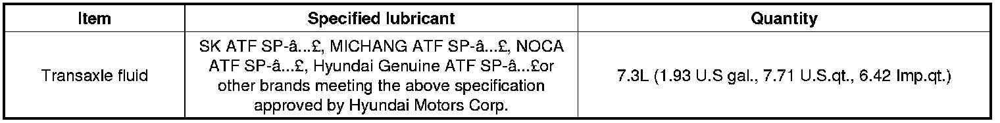
Sealant
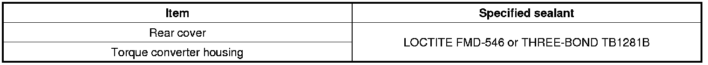